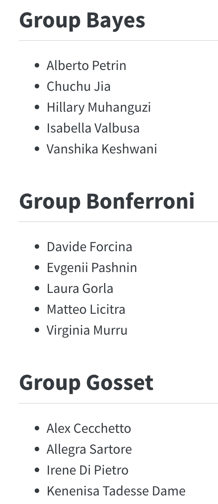
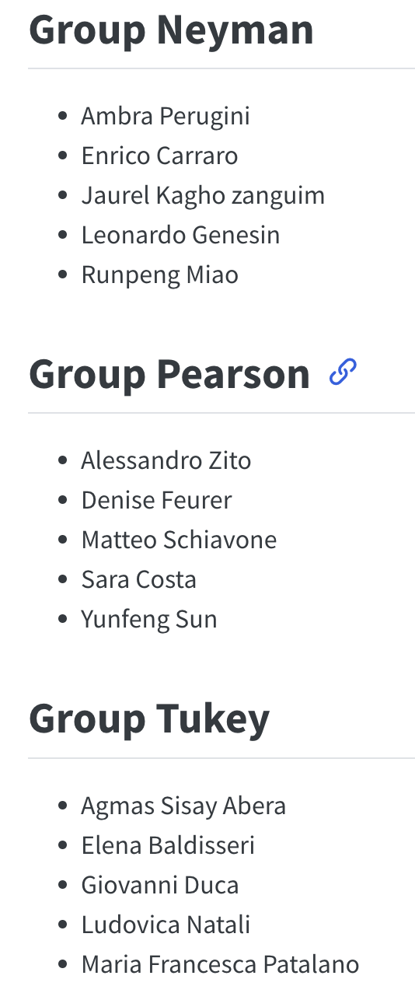

Replicability Crisis in Science?
![]()
Replicability Crisis in Science? is one of the Specialist Courses organized from the Department of Statistical Sciences (University of Padova). The course has been proposed for the AY 2023/24 to the PhD students of the XXXIX cycle.
Overview
When evaluating the reliability of scientific findings and predictions, a major concern is about their replicability, that is their consistency across different studies aimed at answering the same question. A “replicability crisis” has been claimed in the last decades, denouncing that a large part of published research findings, especially in applied sciences, such as psychology or medicine failed to be confirmed by subsequent studies. Difficulties in moving from empirical evidence and data analysis to a scientific result push towards the need to clarify various aspects, such as rigorous definitions, the possible tools for understanding and communicating the uncertainty inherent in most scientific conclusions, the definition of non-questionable research practices. The main objective of the course is to provide a broad and interdisciplinary view, as well as the tools that may enable individual participants to focus on specific aspects of replicability that are relevant to their own discipline of interest. The epistemological, philosophical and scientific/statistical bases of replicability and of its so-called crisis will be addressed in lectures by the teachers. Guided group activities will then be proposed to the students, to discuss basic questions and apply the ideas emerged during the course to some real data analysis.
Lecturers
- Prof. Branden Fitelson, Northeastern University, USA
- Dr. Filippo Gambarota, University of Padova, Italy
- Prof. Giovanni Parmigiani, Harvard University, USA
Schedule
Monday 8th July 2024
9:00 - 12:00
Branden Fitelson - What is a Replication?
Giovanni Parmigiani - Probability of Replication
14:30 - 16:30
Filippo Gambarota - Tools for Open Science
Tuesday 9th July 2024
9:00 - 12:00
Branden Fitelson - How not to measure replication
Giovanni Parmigiani - How to measure replication
- Paper: Mathur & VanderWeele (2020) [pdf] and statistical supplement - [slides]
14:30 - 16:30
Filippo Gambarota - R tools and examples for Measures of Replication
Wednesday 10th July 2024
9:00 - 12:00
Branden Fitelson - Replicability in Psychology
Giovanni Parmigiani - Replicability in Cancer Science
- Paper: Errington et al. (2021) [pdf] Errington’s presentation
14:30 - 16:30
Filippo Gambarota - Meta-analysis and multiverse analysis
Groups
During each day there will be some group activites. We created some balanced groups according to the background.

